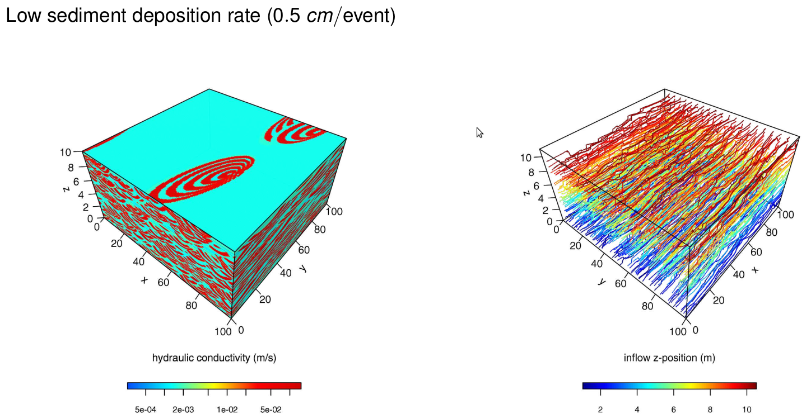
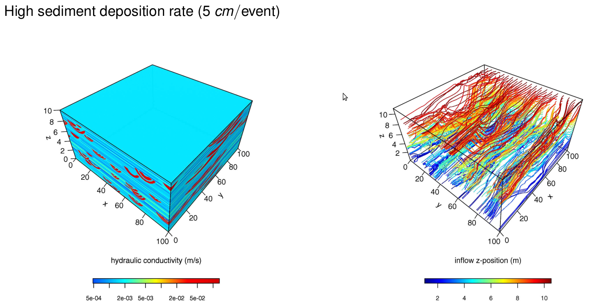

Project: Simulation of coarse braided river deposits
23 Dec 2022Abstract: How does braided river dynamics create subsurface heterogeneity and how does this heterogeneity impact groundwater flow field?
How does braided river dynamics create subsurface heterogeneity and how does this heterogeneity impact groundwater flow field?
- Near subsurface information was probed with Ground-Penetrating Radar (GPR) on the braidplain of the Tagliamento River (northeast Italy). The GPR data after processing and interpretation allowed us to confirm hypotheses deduced from geomorphological observations. Publication in preparation.
- We developped a relatively simple 3D marked point process (also called object based model) which captures the main subsurface heterogeneities that are relevant for subsurface flow and transport. The numerical model, called “CBRDM” (for Coarse Braided River Deposit Model), is freely available on Github for download: CBRDM. This model is still under development and based on the R-package
RConicsdeveloped by myself for computation on conics. A sampling method based on McMC was designed to allow the main 3D structures of coarse braided deposits to be conditioned to 2D GPR data whereby the uncertainty on the dimension of the 3D structures is quantified with Approximate Bayesian Computation methods.
Related publications:
Morphological perspective on the sedimentary characteristics of a coarse, braided reach: Tagliamento
- E. Huber, P. Huggenberger (2015) Morphological perspective on the sedimentary characteristics of a coarse, braided reach: Tagliamento River (NE Italy). Geomorphology.
 DOI: 10.1016/j.geomorph.2015.07.015
DOI: 10.1016/j.geomorph.2015.07.015 - Oral presentation:E. Huber, P. Huggenberger, J. Caers (2016) A 3D object-based model to simulate highly-heterogeneous, coarse, braided river deposits. AGU 2016 Fall Meeting, San Francisco, California, USA, 12–16 December 2016. DOI: 10.13140/RG.2.2.29333.32489
- Emanuel Huber, Birte Anders, Peter Huggenberger (2019) Imaging scours in straightened and braided gravel-bed rivers with ground-penetrating radar. Near Surface Geophysics</p>
DOI: 10.1002/nsg.12042

